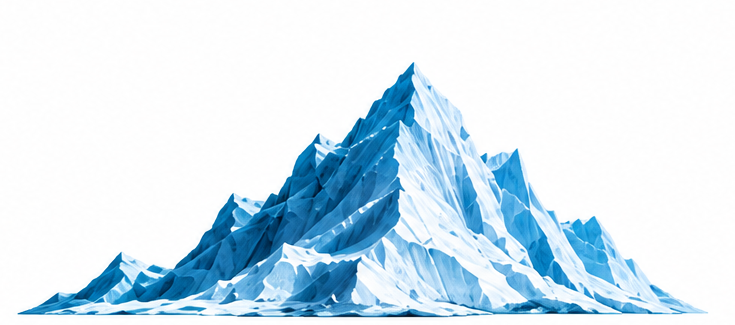
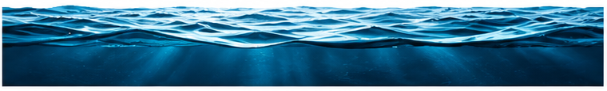

Peer-group comparison
We use machine learning to level the playing field by comparing ships of similar age, type, size, and flag.
Understand the difference between ports. Prepare for what comes next.
SCROLL TO EXPLORE ↓Consider a ship that calls at two different ports. At the first port, it receives 2 deficiencies. At the second port, it receives 8.
The ship was the same. The maintenance was the same. The crew was the same. The only variable that changed was the port.
That difference is what the Port stringency score measures. It looks at how strictly each port behaves, giving you a clear, intuitive feel for how the local Port State Control regime will treat a ship like yours.


The logic begins with a simple question: if the exact same ship calls at two different ports, how does each port's PSC regime behave?
We use machine learning to level the playing field by comparing ships of similar age, type, size, and flag.
The model tracks how these matching vessels are treated across different ports worldwide using years of global PSC records.
By holding the vessel profile constant, the algorithm isolates the port's actual behavior, turning millions of historical inspection data points into a clear index of how strict your destination port will be.
Traditional PSC strictness indexes only look at raw averages—like total deficiencies per vessel, or detentions divided by total inspections. On its own, that math doesn't tell the full story because it ignores the types of ships visiting those harbors. Combining these moving averages with machine learning algorithms gives you a true, complete picture of the Port State Control regime at every port.